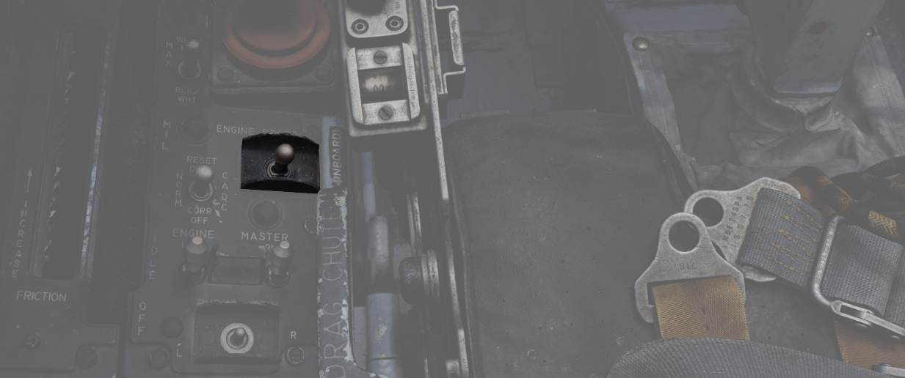
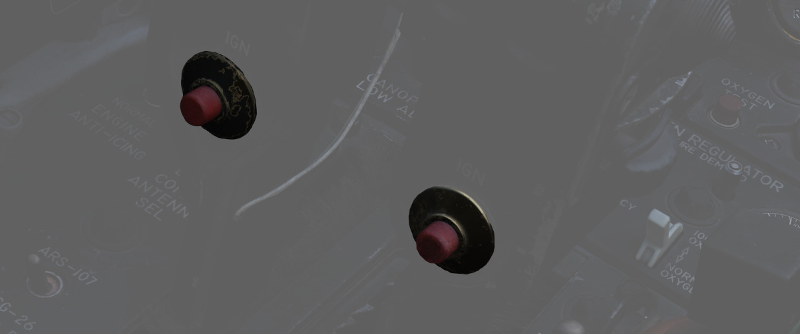
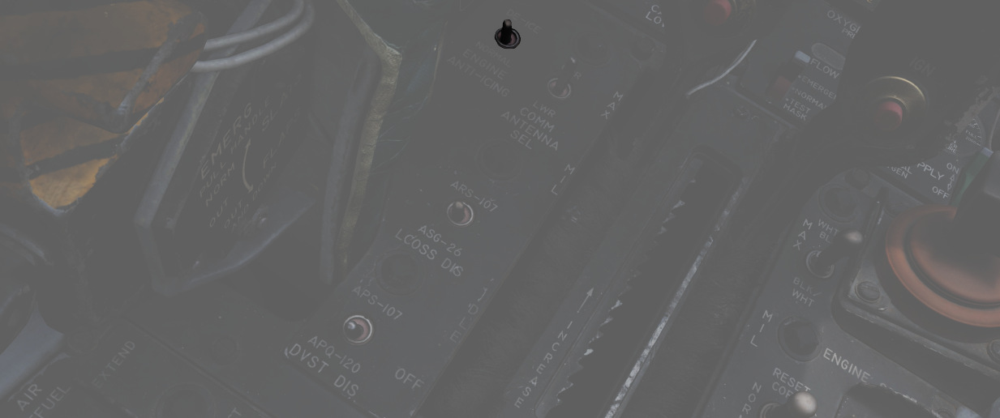
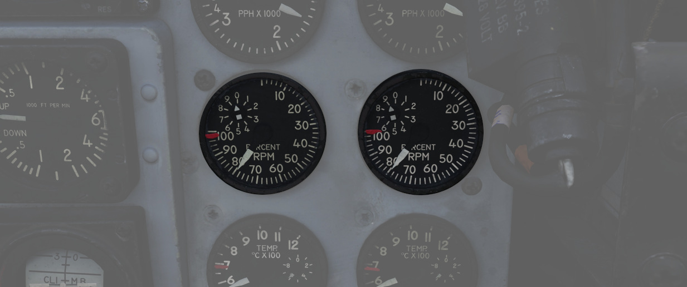

Engines

The F-4E Phantom is powered by two J79-GE-17 engines built by General Electric, with a rated static sea-level power delivery of 11,870 pounds of thrust in Mil, and 17,900 pounds in afterburner. The engines have provision for both assisted pneumatic start at fields with an available cart, or via a propellant cartridge to initiate spin-up. Similarly, the engines can utilize the aircraft's internal battery for initial power, or connection with an external power cart.
💡 When the engines are off they make a rattling noise as the respective blades rattle in their holders. This is called windmilling.
Fuel Flow Indicators

Each engine has a fuel flow indicator found in the front cockpit instrument.
The indicators read in thousands of pounds per hour, from 0 to 12. The indicators provide flow rate up to Mil power; when afterburner is engaged, a separate fuel delivery system is used to provide fuel directly to the afterburner stage, and the flow rate is approximately 4 times the value shown. The engine speed is also controlled by the fuel flow, so a change in fuel flow can be directly observed if the throttles are moved.
Fuel Flow should not exceed 1200 pph at lightoff and 800 to 1500 pph at idle operations. Fuel consumption for Engine start is approximately 65 pounds per Engine.
Oil System

Each engine is equipped with a completely self-contained, dry sump, full pressure oil system. The oil supply to the lubrication system is interrupted during negative G-flight due to the inability of the scavenge pumps to recover oil from the sumps and gear boxes. The Engine Oil system is used for lubrication, variable nozzle positioning and constant speed drive unit operation. The standpipes which supply the three systems utilizing engine oil are in the reservoir such that the pipe for the constant speed drive unit is the highest, the one for the nozzle control is the next highest, and the lubricating system pipe is the lowest. This arrangement is to prevent a critical system failure if one of the circuits leak. If a leak in the constant speed drive unit would occur it will probably cause a failure of that system only, while a leak in the nozzle control system may cause failure of that system and the constant speed drive unit. Oil is also supplied directly from the reservoir to the constant speed drive unit, where it is used as both the control and final drive medium for controlling generator speed. The lubrication element of the oil pump supplies oil to cool and lubricate bearings, gears and other rubbing or moving parts in the engine. Lubricating oil is also circulated through the engine-driven generator for cooling purposes.
Oil Pressure Indicators

Oil pressure indicators are on the front cockpit pedestal panel, and calibrated from 0 to 100 PSI. Important values are:
- 12 psi - Minimum at idle RPM
- 30-60 psi - In-flight military
- 35 psi - Static minimum at military thrust
- 60 psi - Maximum
Variable Duct Ramp
Optimization of air to the engines is performed by a Variable Duct Ramp system directed by the Automatic Duct Control (ADC); this optimization uses a pair of variable ramps to decelerate incoming air to subsonic for best engine performance. In the event limits are exceeded for inlet temperature, the Duct Temperature High Indicator Light (DUCT TEMP HI) on the telelight panel will illuminate. Permitting the issue to continue can cause permanent engine damage.
Starting System
Pneumatic Mode Starting

The pneumatic mode is the primary starting mode for all normal and routine operations. In this mode the Phantom utilizes an auxiliary start cart that turns the starter turbine, cranking the engine.
The cart is operated by the crew chief, see the Crew Chief chapter for more information about how to interact and request air supply.
Cartridge Mode Starting

Cartridge mode is considered an alternate method of starting supplied for operational and emergency needs. A propellant charge is used to turn the starter turbine, which in turn cranks the engine to initiate startup. Cartridge ignition is controlled by the engine start switch providing the respective engine master switch is on.
💡 To avoid possible irritation caused by cartridge exhaust smoke/gases, it may be advisable to close canopies and select 100% oxygen during start cycle.
Cartridges can be installed by the crew chief, see the Crew Chief chapter for how to interact and request cartridges installation.
🔴 WARNING: Cartridges are explosive and, unless fired, must not be forgotten to be removed. Under no circumstances will the aircraft be flown with unfired cartridges in the starter.
Start Switch

Used only for cartridge start, selecting L or R ignites the cartridge installed for the respective engine.
Ignition System

The -17E/G engine is equipped with one 28 volt, low energy ignition unit and one 28 volt high energy unit that improves ground starts in cold weather and air starts using alternate fuel. The main ignition system produces an electrical arc which ignites the atomized fuel-air mixture in the fourth and fifth combustion chambers. The remaining eight combustion chambers are ignited through the crossfire tubes. Pressing the ignition button causes the spark plugs to discharge, igniting the fuel-air mixture as the throttle is moved from OFF to IDLE during engine start. The spark plugs only fire while the spring-loaded ignition button is held.
Afterburner Ingition System
The afterburner ignition system consists of the torch igniter, a spark plug and an afterburner ignition switch. When the throttle is moved into the afterburner detent, the afterburner ignition switch closes, and the spark plug supplies a continuous arc. Ignition and torch igniter fuel flow are maintained until the throttle is removed from the afterburner detent.
Engine Anti-Icing System

Using the Anti-Icing Switch set to DE-ICE, bleed air from stage 17 is distributed to ports installed in the compressor face area of the engines. This system does not perform de-icing functions, but is to be activated prior to ice formation. As high Mach speeds provide enough friction heat to the air stream to deny icing in the compressor stage, usage of the Anti-Icing System is unnecessary and can cause engine damage.
The system should be turned on in turbulent air and thunderstorms, or when a rise in Exhaust Gas temperature is noted by the pilot as this is an indication for an engine icing condition.
Anti-Ice Indicator Lights

Activation of the Anti-Icing system will illuminate two lights on the telelight panel, L ANTI-ICE On and R ANTI-ICE On. A failure of the anti-icing system with the Anti-Icing Switch set to NORMAL will also light these telelight indicators as a warning. If the aircraft is above Mach 1.2 when this occurs, immediate speed reduction is necessary to prevent engine loss. Because of the warning function for the ANTI-ICE ON lamps, a condition that illuminates them will provide a MASTER CAUTION warning.
Controls and Indicators
Exhaust Nozzle Control Unit
Throttle position, nozzle position feedback and exhaust gas temperature are utilized to schedule the correct nozzle area. During engine operation in the sub-mil region, the nozzle area is primarily a function of throttle angle and nozzle position feedback. The nozzle is scheduled to approximately 7/8th open at idle and the area is decreased as the throttle is advanced toward the military power position. However, during a rapid throttle burst from below 79% rpm to 98% rpm, a control alternator supplies engine speed information to the temperature amplifier, which in turn schedules engine speed inputs as a function of temperature limiting. This signal prevents the primary nozzle from closing beyond a preset position, permitting a rapid increase in engine rpm that could damage the engine. During engine operation in the military and afterburner region, it becomes necessary to limit the nozzle schedule as established by the throttle angle and nozzle feedback to prohibit exhaust gas temperature from exceeding engine design limits and damaging the engine.
Exhaust Nozzle Position Indicators

Directed by the Exhaust Nozzle Control Unit, the paired primary (the convergent, inner nozzle) and secondary (the divergent, outer nozzle) are actuated independently on a schedule to maximize outlet performance versus exhaust gas temperature. When idle, the engine nozzle will be roughly 7/8ths open, reducing in size as the throttle approaches MIL. During operation in the MIL and AB regions, the Control Unit moderates the nozzle size relative to throttle position and received EGT to maintain temperatures within design limit.
To monitor the current position of the nozzles relative to each other, as well as EGTs, an indicator is provided with calibrations from CLOSE to OPEN in four increments. The nozzle indicators enable the pilot to make a comparison of nozzle position between engines and are also used to establish a relationship between nozzle position and exhaust gas temperature, as well as nozzle position and throttle settings.
Normal settings would be OPEN with the engines off until IDLE, 3/4 to 1/2 with engines in IDLE and 1/4 for MIL power. MAX power will not change the indicator.
Engine Master Switches

A pair of two-position Engine Master Switches are found on the front cockpit left console on the inboard engine control panel. Selecting ON powers the fuel boost and transfer pumps for the respective engine; this will occur whether the aircraft is connected to external auxiliary power or not, as doing so without will connect the aircraft battery to the pump circuits.
As the Engine Master Switches arm the fuel shutoff valves, to properly shut down the engines without external power it is necessary to return the throttles to the cutoff position prior to turning the Engine Master Switches off, otherwise the valves will remain open.
Throttles

Paired throttles are provided in both cockpits for engine thrust control. In normal use, movement of
the throttles from IDLE to OFF will perform fuel cutoff; to prevent inadvertent engine shutdown, a
pair of finger lifts (
The rear cockpit throttles are connected to the front throttles in such a fashion that only the pilot can start the engines or enter the afterburner range; the WSO can reduce throttles out of the afterburner region back into MIL operation and lower. While the rear throttles can be shifted from OFF without pilot assistance, return to OFF for shutdown requires pilot engagement of the finger lifts.
In the event of opposing commands on the throttle arms between seats, the rear throttles will be disconnected from the front throttles to prevent damage to the linkage. This condition may cause a reduction in afterburner authority from the front throttle pair. Resetting the throttle linkage is performed by placing the front throttles at the IDLE or MIL stop and moving the rear throttles in the opposite direction to which the disconnect occurred.
The rear throttles only hold a microphone button and speed brake switch.
Tachometers

Both engines are provided with tachometers on the right side of the front cockpit instrument panel, and the right side of the rear cockpit instrument panel. The tachometers will function without external power.
Exhaust Gas Temperature Indicators

Exhaust Gas Temperature Indicators are found on the front cockpit instrument panel. The indicators have two pointers each: a large pointer for the 0 to 12 scale referencing 100 degrees centigrade, and a smaller pointer on a separate scale with 0 to 10 referencing 10 degrees centigrade. Measuring for these values is performed upon exit of the turbine. For normal operations the exhaust gas temperature should not be less than 250°C and should not exceed more than 540°C. If an overtemperature Event occurs the throttle should be returned to the off position. If that is not possible the respective engine master switch should be turned off.